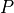

6. Recommendation API¶
-
class
pyspark.ml.recommendation.ALS(rank=10, maxIter=10, regParam=0.1, numUserBlocks=10, numItemBlocks=10, implicitPrefs=False, alpha=1.0, userCol='user', itemCol='item', seed=None, ratingCol='rating', nonnegative=False, checkpointInterval=10, intermediateStorageLevel='MEMORY_AND_DISK', finalStorageLevel='MEMORY_AND_DISK', coldStartStrategy='nan')[source]¶ Alternating Least Squares (ALS) matrix factorization.
ALS attempts to estimate the ratings matrix
 as the product of
two lower-rank matrices,
as the product of
two lower-rank matrices,  and
and  , i.e. . Typically
these approximations are called ‘factor’ matrices. The general
approach is iterative. During each iteration, one of the factor
matrices is held constant, while the other is solved for using least
squares. The newly-solved factor matrix is then held constant while
solving for the other factor matrix.
, i.e. . Typically
these approximations are called ‘factor’ matrices. The general
approach is iterative. During each iteration, one of the factor
matrices is held constant, while the other is solved for using least
squares. The newly-solved factor matrix is then held constant while
solving for the other factor matrix.This is a blocked implementation of the ALS factorization algorithm that groups the two sets of factors (referred to as “users” and “products”) into blocks and reduces communication by only sending one copy of each user vector to each product block on each iteration, and only for the product blocks that need that user’s feature vector. This is achieved by pre-computing some information about the ratings matrix to determine the “out-links” of each user (which blocks of products it will contribute to) and “in-link” information for each product (which of the feature vectors it receives from each user block it will depend on). This allows us to send only an array of feature vectors between each user block and product block, and have the product block find the users’ ratings and update the products based on these messages.
For implicit preference data, the algorithm used is based on “Collaborative Filtering for Implicit Feedback Datasets”,, adapted for the blocked approach used here.
Essentially instead of finding the low-rank approximations to the rating matrix
, this finds the approximations for a preference
matrix  where the elements of are 1 if r > 0 and 0 if r <= 0.
The ratings then act as ‘confidence’ values related to strength of
indicated user preferences rather than explicit ratings given to
items.>>> df = spark.createDataFrame( ... [(0, 0, 4.0), (0, 1, 2.0), (1, 1, 3.0), (1, 2, 4.0), (2, 1, 1.0), (2, 2, 5.0)], ... ["user", "item", "rating"]) >>> als = ALS(rank=10, maxIter=5, seed=0) >>> model = als.fit(df) >>> model.rank 10 >>> model.userFactors.orderBy("id").collect() [Row(id=0, features=[...]), Row(id=1, ...), Row(id=2, ...)] >>> test = spark.createDataFrame([(0, 2), (1, 0), (2, 0)], ["user", "item"]) >>> predictions = sorted(model.transform(test).collect(), key=lambda r: r[0]) >>> predictions[0] Row(user=0, item=2, prediction=-0.13807615637779236) >>> predictions[1] Row(user=1, item=0, prediction=2.6258413791656494) >>> predictions[2] Row(user=2, item=0, prediction=-1.5018409490585327) >>> user_recs = model.recommendForAllUsers(3) >>> user_recs.where(user_recs.user == 0) .select("recommendations.item", "recommendations.rating").collect() [Row(item=[0, 1, 2], rating=[3.910..., 1.992..., -0.138...])] >>> item_recs = model.recommendForAllItems(3) >>> item_recs.where(item_recs.item == 2) .select("recommendations.user", "recommendations.rating").collect() [Row(user=[2, 1, 0], rating=[4.901..., 3.981..., -0.138...])] >>> user_subset = df.where(df.user == 2) >>> user_subset_recs = model.recommendForUserSubset(user_subset, 3) >>> user_subset_recs.select("recommendations.item", "recommendations.rating").first() Row(item=[2, 1, 0], rating=[4.901..., 1.056..., -1.501...]) >>> item_subset = df.where(df.item == 0) >>> item_subset_recs = model.recommendForItemSubset(item_subset, 3) >>> item_subset_recs.select("recommendations.user", "recommendations.rating").first() Row(user=[0, 1, 2], rating=[3.910..., 2.625..., -1.501...]) >>> als_path = temp_path + "/als" >>> als.save(als_path) >>> als2 = ALS.load(als_path) >>> als.getMaxIter() 5 >>> model_path = temp_path + "/als_model" >>> model.save(model_path) >>> model2 = ALSModel.load(model_path) >>> model.rank == model2.rank True >>> sorted(model.userFactors.collect()) == sorted(model2.userFactors.collect()) True >>> sorted(model.itemFactors.collect()) == sorted(model2.itemFactors.collect()) True
New in version 1.4.0.
-
getColdStartStrategy()[source]¶ Gets the value of coldStartStrategy or its default value.
New in version 2.2.0.
-
getFinalStorageLevel()[source]¶ Gets the value of finalStorageLevel or its default value.
New in version 2.0.0.
-
getImplicitPrefs()[source]¶ Gets the value of implicitPrefs or its default value.
New in version 1.4.0.
-
getIntermediateStorageLevel()[source]¶ Gets the value of intermediateStorageLevel or its default value.
New in version 2.0.0.
-
getNumItemBlocks()[source]¶ Gets the value of numItemBlocks or its default value.
New in version 1.4.0.
-
getNumUserBlocks()[source]¶ Gets the value of numUserBlocks or its default value.
New in version 1.4.0.
-
setIntermediateStorageLevel(value)[source]¶ Sets the value of
intermediateStorageLevel.New in version 2.0.0.
-
setNumBlocks(value)[source]¶ Sets both
numUserBlocksandnumItemBlocksto the specific value.New in version 1.4.0.
-
setParams(self, rank=10, maxIter=10, regParam=0.1, numUserBlocks=10, numItemBlocks=10, implicitPrefs=False, alpha=1.0, userCol="user", itemCol="item", seed=None, ratingCol="rating", nonnegative=False, checkpointInterval=10, intermediateStorageLevel="MEMORY_AND_DISK", finalStorageLevel="MEMORY_AND_DISK", coldStartStrategy="nan")[source]¶ Sets params for ALS.
New in version 1.4.0.
-
-
class
pyspark.ml.recommendation.ALSModel(java_model=None)[source]¶ Model fitted by ALS.
New in version 1.4.0.
-
itemFactors[source]¶ and
New in version 1.4.0.
Type: a DataFrame that stores item factors in two columns
-
recommendForAllItems(numUsers)[source]¶ Returns top users recommended for each item, for all items.
Parameters: numUsers – max number of recommendations for each item Returns: a DataFrame of (itemCol, recommendations), where recommendations are stored as an array of (userCol, rating) Rows. New in version 2.2.0.
-
recommendForAllUsers(numItems)[source]¶ Returns top items recommended for each user, for all users.
Parameters: numItems – max number of recommendations for each user Returns: a DataFrame of (userCol, recommendations), where recommendations are stored as an array of (itemCol, rating) Rows. New in version 2.2.0.
-
recommendForItemSubset(dataset, numUsers)[source]¶ Returns top users recommended for each item id in the input data set. Note that if there are duplicate ids in the input dataset, only one set of recommendations per unique id will be returned.
Parameters: - dataset – a Dataset containing a column of item ids. The column name must match .
- numUsers – max number of recommendations for each item
Returns: a DataFrame of (itemCol, recommendations), where recommendations are stored as an array of (userCol, rating) Rows.
New in version 2.3.0.
-
recommendForUserSubset(dataset, numItems)[source]¶ Returns top items recommended for each user id in the input data set. Note that if there are duplicate ids in the input dataset, only one set of recommendations per unique id will be returned.
Parameters: - dataset – a Dataset containing a column of user ids. The column name must match .
- numItems – max number of recommendations for each user
Returns: a DataFrame of (userCol, recommendations), where recommendations are stored as an array of (itemCol, rating) Rows.
New in version 2.3.0.
-